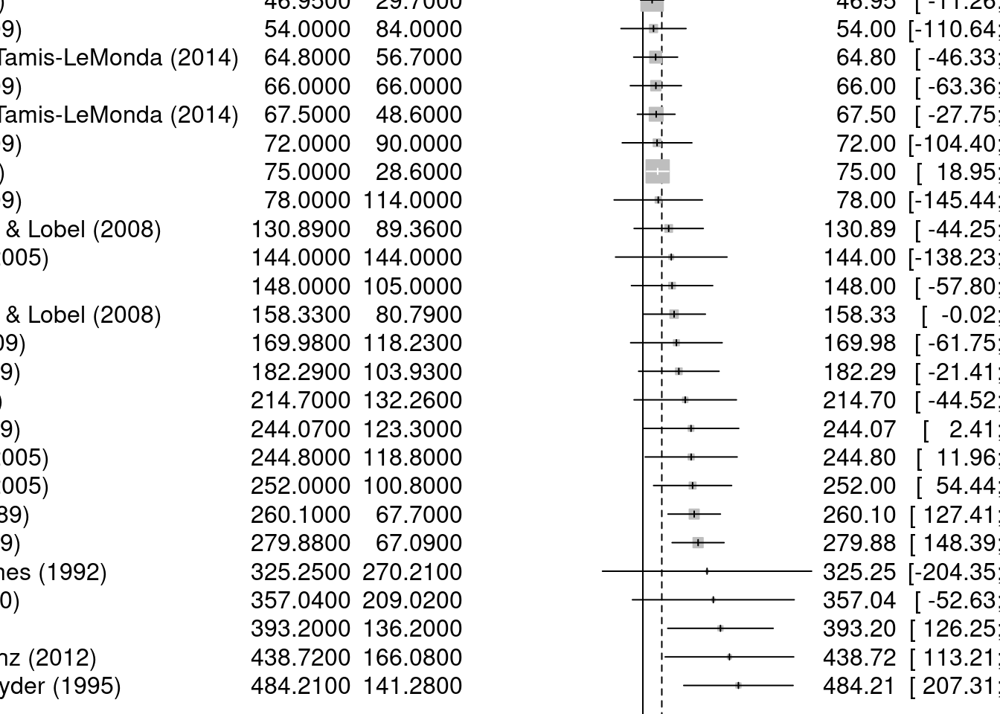

metaanalysis_data: This is a variable that will hold the data read from the Excel file.
read_excel(): This function, part of the readxl package, is employed to read Excel files.
"~/git/RRcourse2023/13. Metaanalysis/data/metaanalysis_data.xlsx": This is the file path pointing to the specific Excel file to be read. The ~ signifies the user’s home directory, and the rest of the path defines the directory structure leading to the Excel file.
In summary, the provided code employs the readxl package to read data from the designated Excel file and then stores that data in the variable metaanalysis_data. This data can subsequently be used for further analysis or exploration within the R environment.
```{r}library(readxl)library(dplyr)```
Attaching package: 'dplyr'
The following objects are masked from 'package:stats':
filter, lag
The following objects are masked from 'package:base':
intersect, setdiff, setequal, union
Neutral toys (1 = neutral toys included; 2 = neutral toys not included); Parent present (1 = absent; 2 = minimal interaction; 3 = moderate or full interaction); Setting = location of study (1 = home; 2 = laboratory; 3 = nursery); Country = gender inequality index, a measure of how gender egalitarian the country was at the time the study took place.
Note. Quality is assessed using Newcastle–Ottawa Quality Assessment Scale criteria adapted for this study. A star indicates that the study fulfilled this criterion; an X indicates that the study did not fulfil this criterion. Case definition adequate: clear justification for the gendered nature of a toy, for example, based on research. Representativeness of cases: recruitment of consecutive participants. Selection of controls: whether boys and girls were comparable in terms of social background. Parental opinion: whether parents’ views on gender were measured. Comparability of both groups: the toys were comparable (in size, shape, etc.) and if the boys and girls were comparable in age. Ascertainment of behaviour: Play behaviour was clearly defined. Same ascertainment method for both groups: The measurement of the outcome (time spent playing with toy) was clearly defined. Nonresponse rate: whether either nonuptake or dropout rates reported.
The provided code is used to load and attach multiple R packages using a vector of package names.
lib <- c("metafor", "metadat", "meta"):
lib: This is a variable that holds a vector of package names. The packages to be loaded are “metafor,” “metadat,” and “meta.”
c(): This function creates a vector containing the specified package names.
lapply(lib, library, character.only = TRUE):
lapply(): This function applies another function to each element of the lib vector.
lib: The vector of package names created earlier.
library: The function being applied to each package name. It loads and attaches the specified package.
character.only = TRUE: This argument ensures that only the character strings (package names) are passed to the library() function, preventing any additional arguments from being passed accidentally.
In summary, the provided code loads and attaches the “metafor,” “metadat,” and “meta” packages using the library() function for each package name in the lib vector. This makes the functions and features of these packages available for use in the current R session.
Loading the 'metafor' package (version 4.2-0). For an
introduction to the package please type: help(metafor)
Loading 'meta' package (version 6.5-0).
Type 'help(meta)' for a brief overview.
Readers of 'Meta-Analysis with R (Use R!)' should install
older version of 'meta' package: https://tinyurl.com/dt4y5drs
Number of studies: k = 27
95%-CI z p-value
Common effect model 96.0551 [71.9496; 120.1605] 7.81 < 0.0001
Quantifying heterogeneity:
tau^2 = 5063.4218 [836.1518; 17480.4313]; tau = 71.1577 [28.9163; 132.2136]
I^2 = 48.7% [19.8%; 67.2%]; H = 1.40 [1.12; 1.75]
Test of heterogeneity:
Q d.f. p-value
50.67 26 0.0026
Details on meta-analytical method:
- Inverse variance method
- Restricted maximum-likelihood estimator for tau^2
- Q-Profile method for confidence interval of tau^2 and tau
INTERPRETATION
Number of Studies (k): The meta-analysis includes data from 27 studies.
Overall Effect Size (Common effect model): The calculated overall effect size is 96.0551, with a confidence interval (95%) ranging from 71.9496 to 120.1605. This effect size represents the combined estimate of the treatment effect across all studies.
Z-score and p-value: The Z-score is 7.81, and the associated p-value is less than 0.0001. This indicates a statistically significant treatment effect, implying that the observed effect is unlikely to be due to random chance.
Quantifying Heterogeneity: - Tau^2: The estimated amount of residual heterogeneity (variability between study effect sizes) is 5063.4218. The confidence interval for tau^2 ranges from 836.1518 to 17480.4313. - Tau: The square root of tau^2 is 71.1577, with a confidence interval from 28.9163 to 132.2136. - I^2: The I^2 statistic is 48.7%, suggesting that a moderate portion of the variability in effect sizes is due to true heterogeneity among the studies. - H: The H statistic is 1.40, indicating the presence of heterogeneity. An H value greater than 1 suggests the existence of heterogeneity.
Test of Heterogeneity: The Q statistic for the test of heterogeneity is 50.67 with 26 degrees of freedom. The associated p-value is 0.0026, indicating significant heterogeneity among the effect sizes across studies.
This meta study proves that the choice f a toy was not by chance.
```{r}m %>%forest(sortvar=TE)```

The code m %>% forest(sortvar=TE) generates a forest plot using the forest() function from the metafor package in R. Let’s break down what each part of the code does:
m: This refers to the variable m which presumably contains the results of the meta-analysis, specifically the output from the metagen() function.
%>%: This is the pipe operator (%>%), which is used to chain together multiple operations in R. It takes the output of the previous operation and passes it as the first argument to the next operation.
forest(sortvar=TE): This is the function call to forest(). Here’s what it does:
forest(): This function generates a forest plot, which is a graphical representation of the effect sizes from each individual study along with their confidence intervals.
sortvar=TE: This argument specifies that the studies should be sorted based on the effect size (TE stands for Treatment Effect), in descending order. This means that studies with larger effect sizes will be placed higher on the plot.
So, in summary, the code generates a forest plot using the results from the meta-analysis stored in the m variable. The plot will display the individual studies’ effect sizes sorted in descending order, along with their confidence intervals.